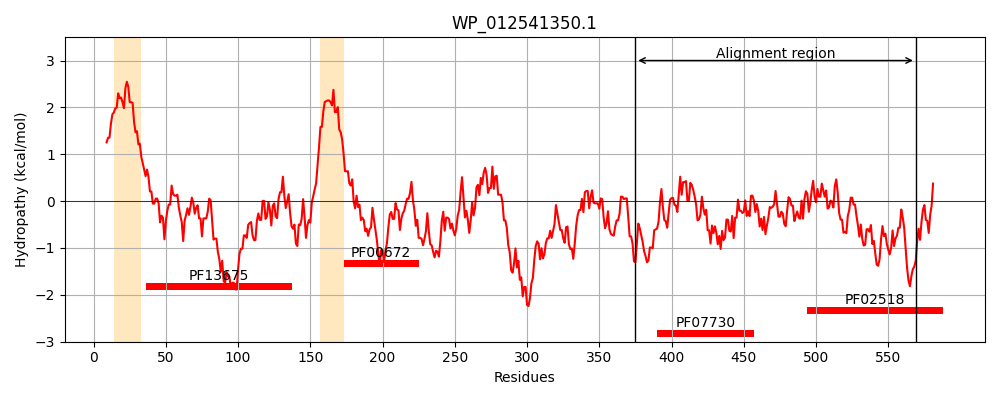
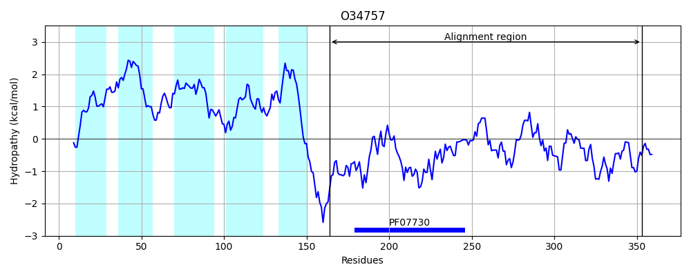
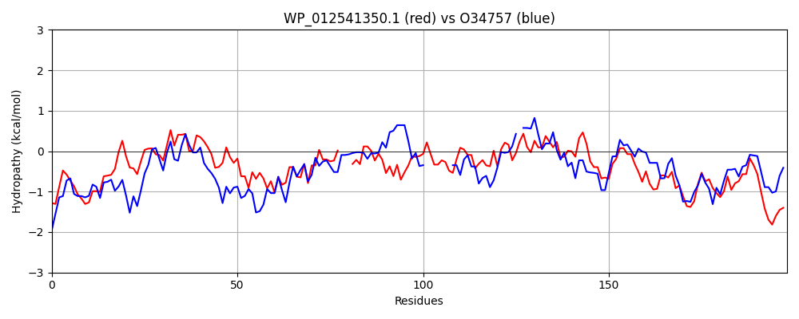

Hit Accession: O34757
Hit TCID: 9.B.238.3.5
Hit Description: gnl|BL_ORD_ID|7150 gnl|TC-DB|O34757|9.B.238.3.5 Sensor histidine kinase DesK OS=Bacillus subtilis (strain 168) OX=224308 GN=desK PE=1 SV=1
Mach Len: 198
e:0.000000
Query TMS Count : 2
Hit TMS Count: 5
TMS-Overlap Score: 0.000000
Predicted Substrates:CHEBI:8526;protein polypeptide chain, CHEBI:2359;ATP
BLAST Alignment:
Score: 142 , Bit scores: 59 bits, E-value: 1.9e-09, Alignment length: 198, Percentage identity: 24
Query: 375 LDRHQEKQQQLIVMEERATIARELHDSIAQSLSCMKMQVSCLQMQGDALPAESRQLLGQIRNELNTSWAQLRELLTTF---RLQLTEPGLRPALEASCQEYSAHFGFTVQLDYQLPPRFVPSHQAIHLLQIAREALSNALKHASATEVTVTVSQRDNQVRLVVADNGRGVPDHAERSNHYGLIIMRDRAQSLRGDCQV 569
L+ E+ +L+ +EER IAR+LHD++ Q LS + ++ + P ++ + L ++ TS ++R+++++ RL+ ++ LEA+ + + + + P ++ I L +EA++N +KH+ A V + Q +V + V+D+G + S +GL+ MR+R + G +
Sbjct: 164 LEDANERIAELVKLEERQRIARDLHDTLGQKLSLIGLKSDLARKLIYKDPEQAARELKSVQQTARTSLNEVRKIVSSMKGIRLKDELINIKQILEAADIMF-------IYEEEKWPENISLLNENI-LSMCLKEAVTNVVKHSQAKTCRVDIQQLWKEVVITVSDDGTFKGEENSFSKGHGLLGMRERLEFANGSLHI 353 | Protein Hydropathy Plots: |
|---|
|  |  |
Pairwise Alignment-Hydropathy Plot:
|
|---|
|  |